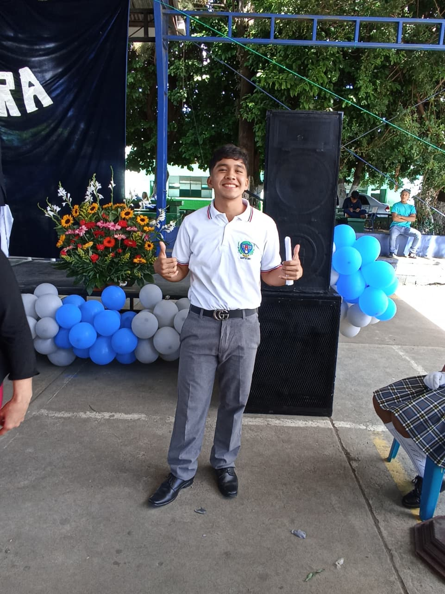

Soy un estudiante de nivel medio con un gran interés en el área de la tecnología, la computación y el desarrollo de software. Me caracterizo por ser una persona responsable, organizada y comprometida con mi aprendizaje y crecimiento personal. Disfruto adquirir nuevos conocimientos y desarrollar habilidades que me permitan mejorar tanto en el ámbito académico como en el ámbito personal.
Actualmente estoy fortaleciendo mis conocimientos en herramientas básicas de desarrollo web, especialmente en tecnologías como HTML, y explorando conceptos relacionados con la programación y el funcionamiento de los sistemas informáticos. Me motiva comprender cómo funciona la tecnología que utilizamos diariamente y cómo puede utilizarse para crear soluciones útiles e innovadoras.
Mi objetivo es continuar mi formación académica en una carrera relacionada con la tecnología, como sistemas, ingeniería o desarrollo de software, donde pueda seguir aprendiendo, desarrollar proyectos y contribuir con soluciones tecnológicas que aporten valor a la sociedad.
Busco constantemente oportunidades para aprender, mejorar mis habilidades y prepararme para enfrentar los retos del futuro profesional.

Nombre: Jeferson Abimael Ramírez Donis
Dirección: 5ta calle a 11-29 zona 4 Villa Nueva
Numero: +502 3731 8512
Email: txjeferson7ipc@gmail.com
Fecha de nacimiento: 14 de febrero del 2009
Edad: 17 años
CUI: 2032560930115

1. Pintar Casas
2. Ayudante de herrero
3. Vendedor de productos
4. Ayudante de albañil
5. Jugador Profecional
Algunos de mis pasatiempos son:
1. Nombre: Salvador Donis
Relación: Familiar y contratista de ayudantes para su oficio
Teléfono: +502 5555 1234
Correo electrónico: salvador.rodriguez@gmail.com
2. Nombre: Dayrin Ramirez
Relacion: Hermano y promotor de productos
Teléfono: +502 5555 5678
Correo electrónico: dayrin.ramirez@gmail.com
3. Nombre: Javier Rodriguez
Relación: Lo conozco formalmente como portero profecional, coincimos en un equipo de 3ra
Teléfono: +502 5555 9012
Correo electrónico: javier.rodriguez@gmail.com